Connectors
Amazon® Web Services Connector
Overview
ASAPIO supports sending SAP event payloads to multiple AWS services using AWS Signature Version 4 (SigV4) request signing. Supported services include:
- Amazon EventBridge – event bus for routing and filtering events
- Amazon SNS – Simple Notification Service for fan-out messaging
- Amazon Kinesis – data streaming for real-time analytics
- Amazon S3 – object storage for event payload archiving
IAM Users & Permissions
Create a dedicated IAM user per AWS service following the principle of least privilege. Required IAM permissions per service:
| Service | Required Permission |
|---|---|
| EventBridge | events:PutEvents |
| SNS | sns:Publish |
| Kinesis | kinesis:PutRecord, kinesis:PutRecords |
| S3 | s3:PutObject |
Setup
1. Activate BC-Set
Activate the BC-Set /ASADEV/ACI_BCSET_FRAMEWORK_AWS via transaction SCPR20.
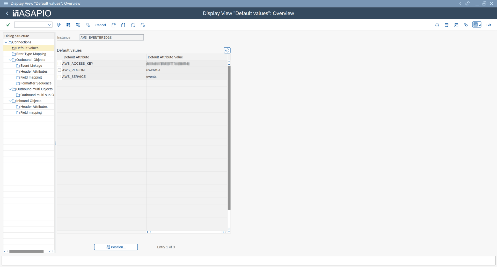
2. Create Cloud Instance
In /ASADEV/ACI_SETTINGS, create an instance with:
| Field | Value |
|---|---|
| Cloud Adapter | /ASADEV/CL_ACI_AWS_HANDLER |
| Cloud Type | AWS |
Set the following default values:
| Key | Value |
|---|---|
AWS_ACCESS_KEY | IAM user Access Key ID |
AWS_REGION | AWS region (e.g. eu-central-1) |
AWS_SERVICE | sns, kinesis, s3, or events |
Store the IAM user's secret access key in /ASADEV/SCI_TPW.
3. Response Handler
Configure the response handler /ASADEV/ACI_AWS_RESP_HANDLER on the outbound object to correctly interpret AWS API responses.
Service-Specific Header Attributes
EventBridge
| Header Attribute | Description |
|---|---|
AWS_EVENTBRIDGE_DETAIL_TYPE | The detail-type field in the EventBridge event |
EVENT_BUS_NAME | Target event bus name or ARN |
SOURCE | The source field (e.g. com.company.sap) |
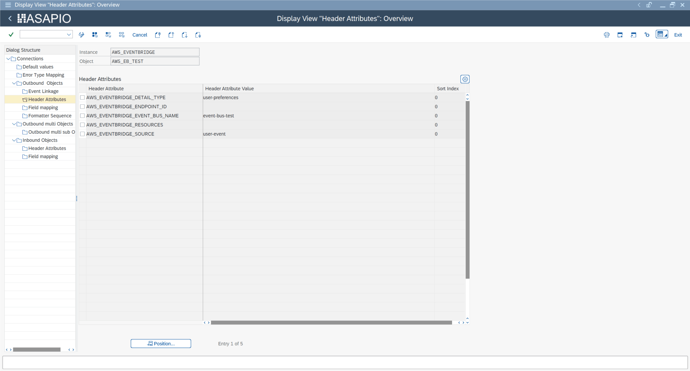
SNS
| Header Attribute | Description |
|---|---|
AWS_TOPIC | SNS topic ARN |
AWS_TOPIC_OWNER | AWS account ID of the topic owner (if cross-account) |
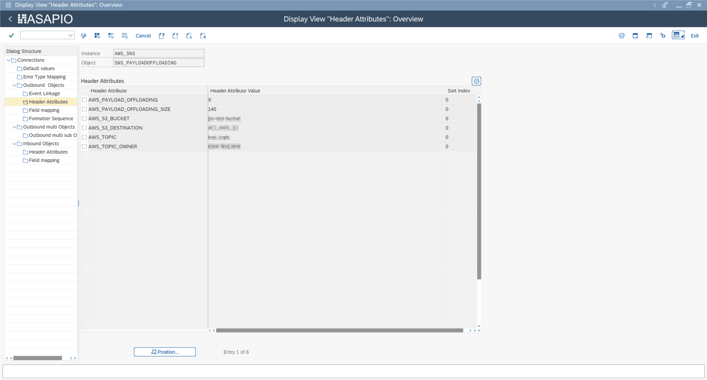
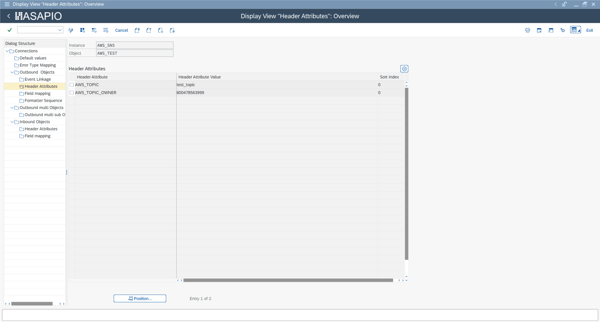
Kinesis
| Header Attribute | Description |
|---|---|
AWS_KINESIS_STREAM_NAME | Name of the Kinesis data stream |
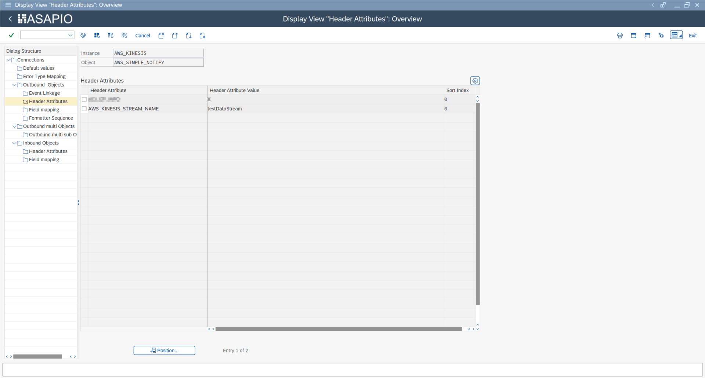
S3
| Header Attribute | Description |
|---|---|
AWS_S3_BUCKET | Target S3 bucket name |
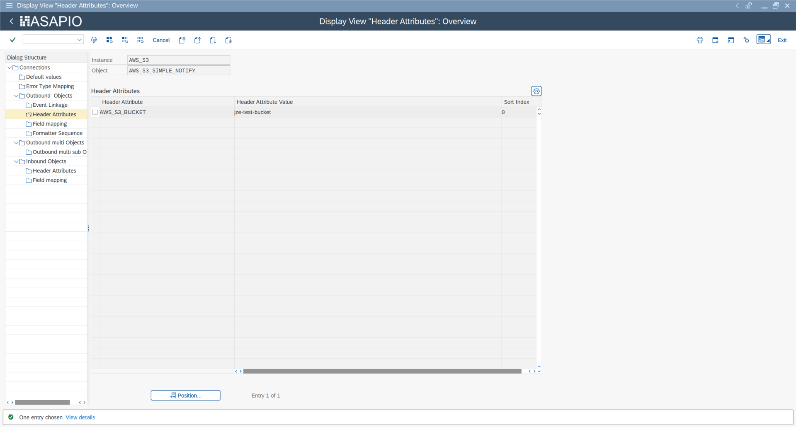
SNS Payload Offloading (S3)
For SNS messages exceeding 256 KB, ASAPIO can automatically offload the payload to S3 and send a reference link in the SNS message. Configure the following header attributes:
| Header Attribute | Description |
|---|---|
AWS_PAYLOAD_OFFLOADING | X – enables payload offloading |
AWS_PAYLOAD_OFFLOADING_SIZE | Threshold in bytes (default: 256000) |
AWS_S3_BUCKET | Target S3 bucket for offloaded payloads |
AWS_S3_DESTINATION | S3 key prefix / folder path |
Custom SNS Message Attributes
As of release 9.32507, you can add custom message attributes to SNS messages. Configure attributes in the Field Mapping of the outbound object using the naming convention AWS_MESSAGE_ATTRIBUTE_<index> (e.g. AWS_MESSAGE_ATTRIBUTE_1). Each entry maps a SAP field to an SNS message attribute key.
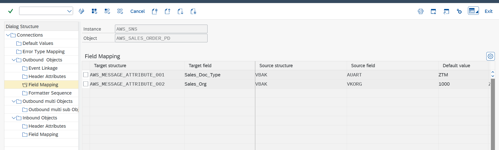
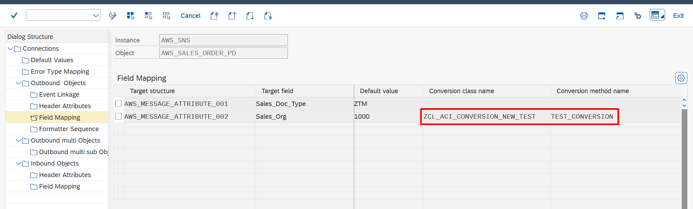
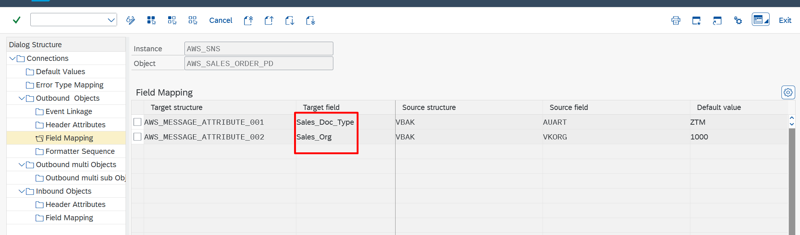
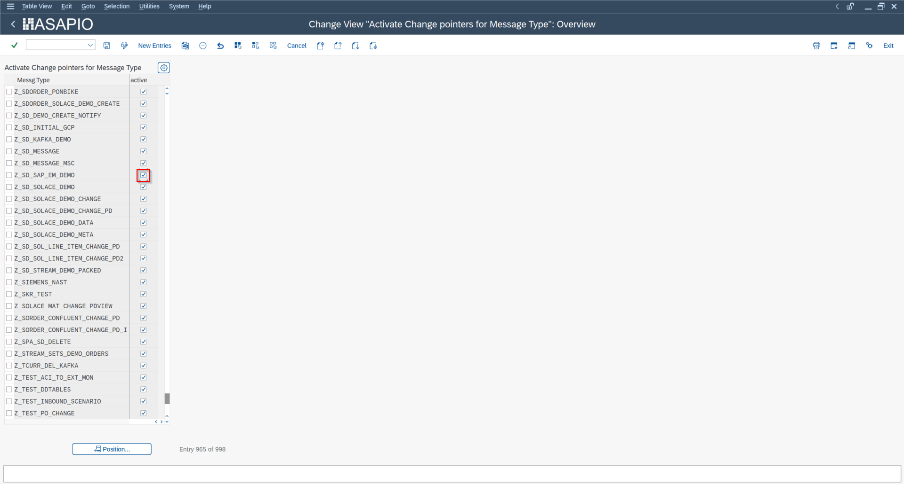
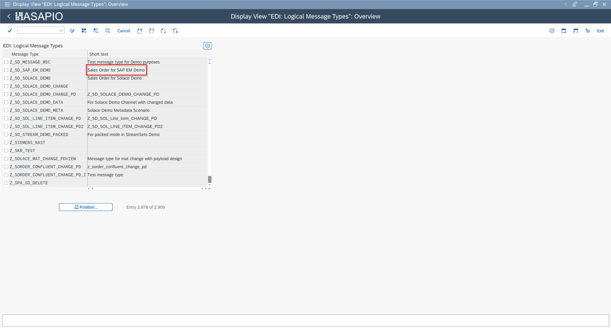